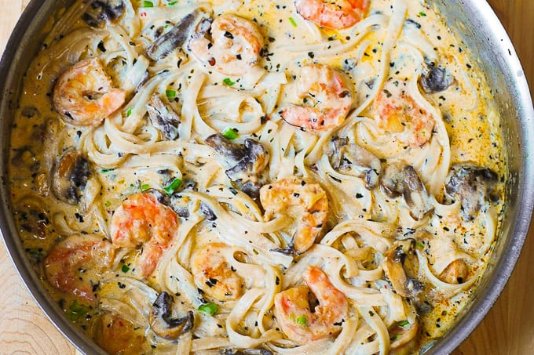

Seafood Alfredo

Seafood Alfredo is a popular dish in coastal cities
Consisting primarily of shrimp, pasta, and afredo sauce, this dish can be tailored to the diner's tastes and often includes mushrooms or scallops as well!
Ingredients:
- 8oz angel hair pasta
- 1/2 cup cooked pasta water
- 2 Tbsp olive oil
- 1/2 lb shrimp
- 1/2 lb scallops
- 3 garlic cloves, minced
- 1/4 tsp dried basil
- 1/4 tsp paprika
- 1/4 tsp salt
- 1/4 tsp red pepper flakes
- 8 oz thinly sliced mushrooms
- 1 cup half-and-half
- 1/2 cup shredded parmesan cheese
- 1/2 cup shredded mozzarella cheese
Steps:
- Cook pasta according to package instructions. Drain. Reserve some of the pasta water.
- Heat a large skiller until hot.
- Add 2 Tbsp olive oil, garlic, shrimp, and scallops.
- Cook shrimp/scallops on one side with medium-high heat for about 1 minute until the shrimp is pink.
- Flip the shrimp/scallops to the other side, then sprinkle with dry basil, paprika, crushed red pepper flakes, and salt.
- Cook for another 1-2 minutes, occasionally stirring, until shrimp is pink on both sides.
- Add sliced mushrooms to a skillet and more olive oil, if necessary. The same skillet is fine, once emptied.
- Cook on medium-high heat for about 2 minutes, occasionally stirring, until mushrooms become soft and release juices. Sprinkle with a small amount of salt midway through cooking.
- Add cooked shrimp in with the mushrooms.
- Add 1 cup half-and-half.
- Bring it all to boil.
- Add half the cheese, bring it back to boil, then reduce to medium-simmer.
- Stir constantly until the cheese melts.
- Gradually add the remaining cheese while stirring, adding just enough to keep the sauce creamy without getting too thick. Remaining cheese is fine as long as the desired consistency has been reached.
- Remove from heat, adding more salt if needed.
- Add cooked and drained pasta from step 1 to the skillet with shrimp, scallops, mushrooms, and cream sauce.
- Reheat on medium heat, stirring well.
- If the cream sauce is too thick, add pasta water in small amount while simmering on low-medium heat.
- Season with more salt, crushed red pepper flakes, and basil if desired.